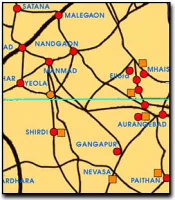

")
Есть разные сатанинские секты. Joy of Satan Ministers (Министерство Радости Сатаны) представляют духовный сатанизм.
• Сатанизм – это не «христианское изобретение».
• Сатанизм предшествует христианству и остальным религиям.
• Сатанизм – не о привидениях, вампирах, монстрах Хэллоуина и др. подобной ерунде.
• Сатанизм – не о «зле»
• Сатанизм – это не «реакция не христианство»
• Сатанизм – не о смерти
• Истинный сатанизм – это расширение власти и возможностей человечества, что и является целью нашего Создателя.
• Мы знаем, что Сатана / Люцифер – реальное живое существо.
• Мы знаем, что Сатана – истинный Отец и Бог-Создатель человечества.
• Мы знаем, что Йахве / Иегова – это фиктивный персонаж, а те, кто стоит за этой ложью и толкает ее в массы, - истинные враги человечества и мастера лжи и обмана. Многочисленные противоречия иудаистско – христианской библии свидетельствуют о том, что этот текст написан людьми со знанием оккультизма, которые напитали его силой, чтобы он производил впечатление правдивости и внушал страх, которым легче всего управлять.
• Мы уважаем закон.
• Мы не признаем ни кровавых, ни каких-либо вообще жертвоприношений живых существ. Это иудаистско – христианский акт, как сказано во Второзаконии 12:27 и совершай всесожжения твои, мясо и кровь, на жертвеннике Господа, Бога твоего; но кровь других жертв твоих должна быть проливаема у жертвенника Господа, Бога твоего, а мясо ешь».
• Мы считаем, что Сатанизм – это оригинальная религия человечества. Таковы результаты нашего исследования. Сатанизм основан на древнейших религиях, которые предшествовали иудаизму и христианству от сотен до тысяч лет.
• Христианство возникло как реакция на оригинальные языческие религии, окрещенные им как «Сатанизм», что означает «враг / противник» на иврите. Если вы прочтете насквозь сайт Радость Сатаны, вы увидите: мы даем доказательство.
• Христианство было сфабриковано с целью изъятия духовного и оккультного знания (силы сознания) у населения и передачи его в руки нескольких «избранных» в ущерб человечеству. Силы сознания и души, безусловно, реальны. Те, кто ничего не знает об этих силах или не верит в их существование, легко поддается контролю и манипуляции со стороны тех, кто имеет навыки использования этих энергий.
• Оригинальные Боги (Демоны) были несправедливо заклеймены как монстры и «лукавые» для того, чтобы удержать нас как можно дальше от духовных знаний. Из-за этого человеческая раса далеко отстала как в духовном, так и в интеллектуальном развитии.
• Духовный Сатанизм глубоко поддерживает познание, исследование и свободную мысль.
• Духовный Сатанизм поддерживает разделение государства и церкви. Сатанисты никому не навязывают Сатанизм и не читают проповеди.
• Духовный Сатанизм признает науку и полагает, что любое оккультное сверхъестественное явление имеет научное объяснение. Мы верим, что человечество опасно отстало в своем развитии в этой области из-за иудаистско – христианской лжи и ее бесконечных нападок на развитие науки на протяжении многих веков.
• Мы практикуем медитацию силы, чтобы развиваться духовно и возвысить самих себя. Медитация силы жизненно необходима для человеческой души так же, как пища необходима для человеческого тела. Змея, символ Сатаны, представляет собой огненную Змею Кундалини, которая тлеет в основании позвоночника, которая будучи вознесена, трансформирует человеческий разум и душу на гораздо более высокий уровень понимания и возможностей. Это и есть истинный смысл «Вызывания Дьявола». Змеиный символ Сатаны также представляет спираль жизни ДНК.
• Мы работаем непосредственно с Сатаной. Мы верим, что любой человек, при достаточном желании и уважении, может иметь личные отношения с Сатаной. В Сатанизме нет пророков. Министерство здесь только для совета и поддержки.
• Мы берем наши принципы и практику непосредственно от самого Сатаны. Слишком долго, враги Сатаны, такие как христианские церкви, были свободны диктовать ложь о Сатане и сатанизме. Эта ложь была основой оккультных преступлений и других отвратительных актов, которым они косвенно способствуют. Правда в том, что Сатанизм активно и рьяно подавлялся в течение многих столетий, и многие по незнанию верят в эту ложь о Сатане и соответственно реагируют.
• Духовный Сатанизм - это религия, которая любит жизнь. Сатана принимает нас, какие мы есть, но ведет нас к улучшения самих себя, чтобы мы развивались и постоянно повышали свой уровень. Духовные сатанисты могут свободно жить своей жизнью, какую сами выбирают - ответственность на ответственных. Мы живем по законам природы и призываем всех развиваться до самой максимальной степени.
• Мы знаем, что только мы и никто другой "спасаем" наши собственные души, в отличие от претензий Назарянина. Сатанизм основан на подлинной трансформации души через медитации силы. Назарянин является фиктивным лицом, чья личность была украдена и слеплена из более 18ти распятых языческих богов, таких как Одина, которые висели на дереве, и не что иное, как инструмент, чтобы держать человечество под контролем немногих избранных. Назорей был использован в христианских богослужениях в качестве заменителя жертвы живой человеческой крови, раскрывая их истинную цель.
• Иудаистско / христианская религия - это страшный обман человечества катастрофических масштабов. Для того, чтобы подобный обман имел успех у жертвы, у последней не должно быть знания. Христианская религия и ее соратники активно подавляют знания и свободную мысль, поощряя людей быть рабами, и никогда не выступают за что-либо для развития или продвижения человечества. В отличие от историй о том, как Назорей исцелял людей, Сатана показывает нам, как мы можем исцелить самих себя и выполнять так называемые чудеса, используя наше сознание и возможности наших собственных душ.
• Через расширение нашей власти и возможностей, у нас есть уверенность, самоуважение и достижение духовного прогресса и независимости.
• Духовный Сатанизм не накладывает ограничения на развитие силы ума, известное как "колдовство" или "магия". Мы верим в справедливость и так же, как мастера боевых искусств знают как использовать Дим Мак и другие аспекты физической борьбы, Духовные Сатанисты знают как использовать Черные Искусства "магии", если они когда-нибудь понадобятся. Люди, которые не знают об этих возможностях, беззащитны против них, и власть имущие знают все это слишком хорошо. Сатана не терпит несправедливости.
• Духовный Сатанизм не в коей мере не оправдывает злоупотребление духовной властью, как описано в классических гримуарах. Демоны, которые были связаны и вынуждены действовать по указке колдунов, сейчас свободны, и каждый, кто использует методы, такие как круги в девять футов и имена «Иеговы», не призовет ничего, кроме катастрофы. Демоны - наши друзья и, вызывая их с уважением и почтением через Сатану, мы стремимся установить взаимовыгодные отношения с ними.
• Духовный Сатанизм поощряет индивидуальность, свободу и независимость.
• Это очевидно, что Сатана не "обманщик человечества". Его последователи были немногочисленны и ему не нужно обильное количество богатства, власти и контроля, чтобы удержать своих последователей.

Происхождение имени Сатана:
После нескольких лет интенсивных и обширных исследований, все встало на свои места.
• 1. Библия была изобретена для того, чтобы сохранить эзотерическое знание и силу ума / души в руках немногих избранных.
• 2. Христианство, которое появилось вместе с католической церковью, было изобретено, чтобы физически реализовать сказанное выше, а также, чтобы уничтожить и заменить оригинальные религии. Оригинальные религии сосредоточены на вопросе почитания змей. Змей является символом кундалини. "Древо познания" в действительности представляет карту человеческой души. Это видно практически в каждой древней религии, предваряющей иудео / христианство. Ствол символизирует позвоночник, а ветви символизируют чакры и пути кундалини. Есть 144 000 нади (каналы течения кундалини, жизненной силы) внутри человеческой души.
Будда сидел под "деревом Бо" и достиг просветления. "Бо означает змею, как в Бо-А или Бoo-Та».[1] Христианская церковь украла, деформировала, и исказила все, что только смогла из исходных религий. Взгляните, смоковница, была известна как "Древо Мудрости" Фикус Религиоза.[2] Хсианская церковь извратила это с размещением фиговых листьев над гениталиями Адама и Евы.
• 3. "Сатана" на иврите означает "враг" и "противник".
Но слово "Сатана" восходит гораздо, гораздо дальше в глубь веков, чем иврит. Вот ссылка каждый должен прочесть.
Видите, в верхней северо-западном углу карты Индии, имя города "Satana".
"Сатнам" и "Са Та На Ма" - священные мантры, используемые для стимуляции кундалини (змея). Пять древнейших звуков на санскрите, самом древнем из известных языков "SA-ТА-НА-МА». "Са" означает бесконечность; Та означает жизнь; На означает смерть, и Ма означает возрождение. Все вариации имени «Сатана» означают ПРАВДА на санскрите, который является одним из самых старых и самых древних языков.
Все это имеет отношение к кундалини, жизненной силе (Змея) внутри нас. "Одежда Иакова из цветов" в библии - это аура. Число семь – это число центральных чакр. Переводчики старых гримуаров все переврали относительно «семи планет». Древние знали гораздо больше, чем мы относительно астрономии.
Каждый, кто знаком с китайской медициной и продвинутыми боевыми искусствами, знает о ци (жизненной силе, она же кундалини) и что она более активна в некоторых каналах человеческого тела в определенные дни и часы. Я загрузила диаграмму в разделе Медитации на эту тему. Авторы текстов по алхимии того времени закодировали свои труды, чтобы избежать преследования со стороны церкви.
Солнце было еще одним объектом почитания в оригинальных религиях. Это из-за той чистой неодолимой силы, которую оно дарует, и из-за того, что оно является источником всей жизни. Поглощение энергии Луны и звезд - ничто по сравнению с тем, что можно сделать под солнцем, учитывая знания и подготовку. Члены духовенства Joy of Satan знают, что это. Отверстия в ауре исцеляется под Солнцем и жизненная сила увеличивается так, как от одного другого источника света.
"Люцифер" было также дано нашему любимому Отцу как имя. Люцифер - изначально римский бог, никак не связанный с нашим Отцом Сатаной / Эа. Приставка "Люц" имеет отношение к свету. Душа нуждается в свете. Утренняя звезда, Венера, была источником света для древних, так как ее восход предшествовал самому важному из светил – Солнцу. Венера также управляет горловой чакрой эмоций, второго узла (грандхи) из трех.
Отец Сатана (я предпочитаю называть его Сатана, лично), сказал мне, что ег не особо беспокоит, что люди называют его по имени, под которым он был известен им века, даже если оно неточно. Я зову его Отец Сатана, когда я с ним общаюсь или поблагодарю его за что-то. Для меня "Сатана" всегда означает "противник", противник вражеской лжи иудео / христианства.
Католическая церковь знала, что оригинальные религии должны быть заменены на что-то другое, и это то, откуда пришли все лживые библейские истории. Они все - грабеж языческих оригиналов, которые уходят корнями в незапамятное прошлое - гораздо старше, чем 300 лет н.э., когда иудео / христианство впервые подняло свою уродливую голову.
Дева Мария украла и заменила Богиню Астарот, которая была известна, как "Царица Неба". Астарот была самой популярной Богиней в дохристианском мире. Фиктивный Иегова содран с Энлиля / Вельзевула / Баэля, который был самым популярным Богом в дохристианской мира, в то время как наш любимый Отец-Создатель Сатана / Эа / Энки, предстал как Змий и Дьявол.
Сексуальность, которая является основным аспектом жизненной силы, автоматически попала под пристальное внимание со стороны церкви. Оргазм непосредственно стимулирует Змею Кундалини у основания позвоночника. Необходимая для создания другой человеческой жизни, творческая энергия может использоваться, чтобы возродить нашу жизненную силу, которая продвигает и наделяет могуществом душу.
Очевидно, сексуальная активность не может быть запрещена полностью, поэтому был использован страх, чтобы строжайше регулировать ее. В хсианской религии, особенно оригинальной католической церкви, все сексуальное удовольствие грешно и запрещено. Близость допускается только чтобы производить на свет детей и не более. Нагота стала грехом, потому что она приводит к похоти. Мастурбация стала еще одним "смертным грехом". Все, что так или иначе связано с поднятием кундалини, церковь жестоко преследовала. Единственная цель христианской церкви - это удаление знаний и ничего более.
В то время как массы лишены этого знания и силы, немногие избранных, которые работали, чтобы удалить эти знания, сами свободно использовали их, чтобы поработить несведущий мир. Иезуиты католической церкви, убийцы, как известно, могли даже левитировать, - столько психической власти они оттянули через молитвы их ничего не подозревающих жертв.
[1] Плащ иллюминатов Уильяма Генри, 2003
[2] Там же.
Хотя эта книга имеет много ценной информации, если читать между строк, автор заблуждается, веря в фиктивного назарянина.
|